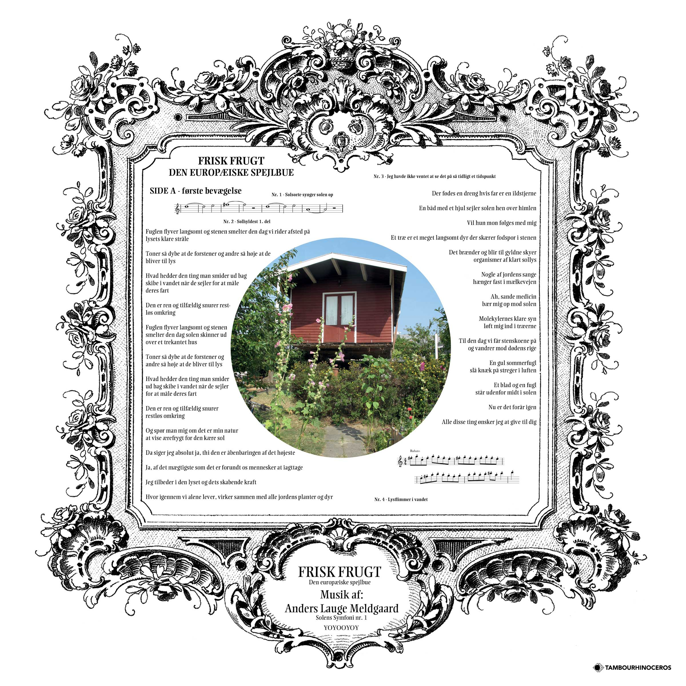
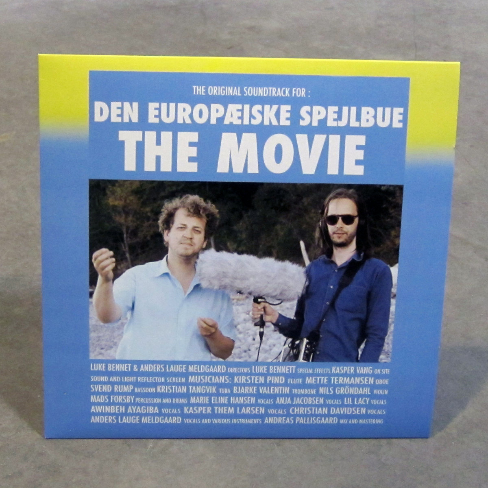

Frisk Frugt - Den Europæiske Spejlbue · 2016
A suite of compositions published on the album "Den Europæiske Spejlbue" (eng. The European Mirror-Arch). Two different versions of the album were released on vinyl and digital. "Den Europæiske Spejlbue - The Movie Version” was released as the soundtrack for the music video performance made of the album in collaboration with filmmaker Luke Bennett. The video version was premiered online by The Wire (UK) and at Statens Museum for Kunst (DK) and later exhibited at the Museum of Contemporary Art in Roskilde, Denmark.
Pressrelease for the album:
Frisk Frugt released his critically acclaimed, genre-defying and ultra-ambitious album Dansktoppen møder Burkina Faso i det himmelblå rum hvor solen bor, suite in January 2015. Anders Lauge Meldgaard and filmmaker Luke Bennett created an accompanying movie a few months later which premiered at "Statens Museum for Kunst" (DK) in May the same year. Two new songs were made for the movie edition, one song disappeared and the whole thing has been remastered into the new edition of the album that is now released on a limited vinyl run of 200 units.
“After having finished Den Europæiske Spejlbue we continued to work on the music until the movie was finished, and as new music and a new mastering happened we decided that there also should be a new vinyl. The vinyl has been cut by the legendary “Loop-O” at Calyx in Berlin, ad we’re really happy about the result” says Anders Lauge Meldgaard.
The music on both the album’s first release and the new movie-edition stems, among other things, from Anders’ studies of european world-music. A study he undertook after having travelled other parts of the world in seek of inspirations for his past releases. Upon its first release Den Europæiske Spejlbue received much praise from international music media as well as a Nordic Music Prize-nomination.
On Den Europæiske Spejlbue one clearly senses Anders’s compositional flair. At the same time one hears a wide range of genres in the music: free improvised noise, Danish folk-song, classical European music, avant-garde and pop merge to create an opus, equally something to sing along to and to study.

Interview from Weekendavisen Jan. 23rd 2015 (in Danish)